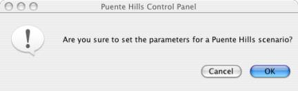

Puente Hills Scenario Settings

Fig - 1: This allows user automatically set the parameters for the Puente Hills Scenario. If user clicks on "OK" button , it sets the parameters for Puente Hills Scenario , but if "Cancel" button is clicked then nothing happens.